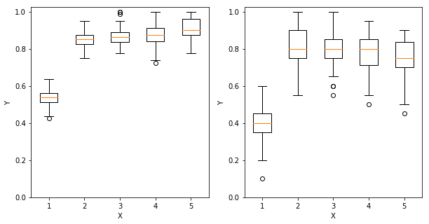
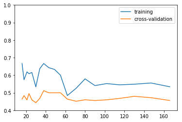
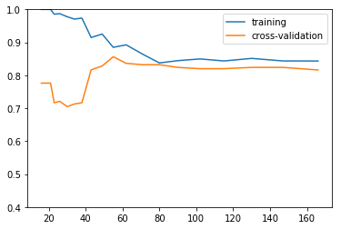
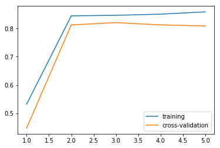
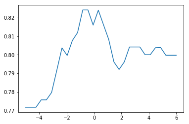
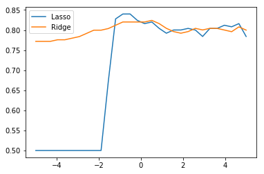
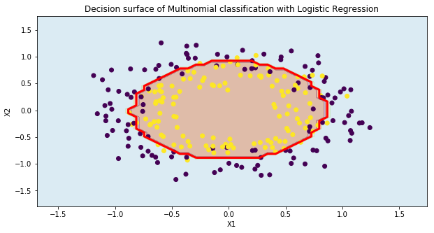

1. Introduction
After two introductory post-series (linear and logistic regression), we dive into a crucial topic that every machine-learning practitioner should be at least aware of: model selection.
Basically, we do not want our models to learn our data by heart and then to struggle to handle new unseen data samples. We want them to be great at generalizing.
We have introduced the bias and variance concepts in Part1 and the bias-variance dilemma, the model capacity, the training/testing split practice and learning curves analysis in Part2. We moved to the cross-validation and regularization techniques in Part3, implemented the Ridge regression in Python in Part4.
We apply the same workflow of the mini-series about model selection for a linear binary classification problem (first and second posts) to a non-linear case, where the model needs to separate two circular clouds with a circle.
Let’s inspect the model accuracy variability, the application of learning and validation curves with Scikit-learn, selection of the best model capacity with cross-validation with different regularization loss definitions.
2. Training and testing accuracy variability
As we have explained in this post, one key point in the machine-learning field regards how the accuracy of the model might change for varying datasets.
We assess the accuracy variability by applying the pipeline (sampling from the dataset distribution, training the model and predicting the outcome for training and test sets) Nsim times.
We repeat this process for five different polynomial degrees ranging from 1 to 5.
Nsim = 150
accTrainss, accTestss = [], []
degrees = np.arange(1, 6)
for dgr in degrees:
accTrains, accTests = [], []
for kk in range(Nsim):
XX, YY = genCircles()
Xtrain, Xtest, Ytrain, Ytest = train_test_split(XX, YY, test_size=0.2, random_state=42)
scl = StandardScaler()
pf = PolynomialFeatures(dgr, include_bias=False)
Xtrain = scl.fit_transform(pf.fit_transform(Xtrain))
Xtest = scl.transform(pf.fit_transform(Xtest))
# fit new training data with logistic regression
lgr = LogisticRegression(C=1e5)
lgr.fit(Xtrain, Ytrain)
YpredTR = lgr.predict(Xtrain)
YpredTS = lgr.predict(Xtest)
accTrains.append(metrics.accuracy_score(Ytrain, YpredTR))
accTests.append(metrics.accuracy_score(Ytest, YpredTS))
accTrainss.append(accTrains)
accTestss.append(accTests)
accuraciesTrain = np.array(accTrainss)
accuraciesTest = np.array(accTestss)
We visualize the accuracy variability of each model complexity (degree) with a boxplot.
This chart is very useful to inspect the actual statistical behaviour of the model. In this case, we can see how the median accuracy drastically increases from first to second degree and keeps slightly increasing until the 5-degree case over the training set. However, the second-degree case, which gives the highest values from 25th to 75th percentiles (see the box limits for degree 2), would be the best option.
plt.figure(figsize=(10, 5))
plt.subplot(121)
plt.boxplot(accuraciesTrain.T)
plt.xlabel("X")
plt.ylabel("Y")
plt.ylim([0, 1.025])
plt.subplot(122)
plt.boxplot(accuraciesTest.T)
plt.xlabel("X")
plt.ylabel("Y")
plt.ylim([0, 1.025])
plt.show()

3. Learning curves
We apply the learning-curve analysis to this case to a piped model with the learning_curve function.
We use a first-degree input and the logistic model without regularization.
We define the learning curve for different sizes of the training set ranging from 10% to 100% of the whole training set.
It is fed as a 1D array to the learning_curve function via the train_sizes attribute.
XX, YY = genCircles(250)
model = make_pipeline(PolynomialFeatures(degree=1), StandardScaler(), LogisticRegression(C=1e5))
trainSizes, trainScores, valScores = learning_curve(model, XX, YY, train_sizes=np.logspace(-1, 0, 20))
The figure shows the accuracy trend for training and validation sets. We see both training and validation accuracies do not improve. This is due to the limit of the model, no matter what training set size is being used.
plt.figure()
plt.plot(trainSizes, trainScores.mean(axis=1), label='training')
plt.plot(trainSizes, valScores.mean(axis=1), label='cross-validation')
plt.ylim([0.4, 1])
plt.legend();

We extend this methodology to a 2-degree polynomial function. The figure clearly highlights in this case how the training set size helps to narrow down the training/validation accuracy gap, at the expense of a training accuracy drop of 15%.
model = make_pipeline(PolynomialFeatures(degree=2), StandardScaler(), LogisticRegression(C=1e5))
trainSizes, trainScores, valScores = learning_curve(model, XX, YY, train_sizes=np.logspace(-1, 0, 20))
plt.figure()
plt.plot(trainSizes, trainScores.mean(axis=1), label='training')
plt.plot(trainSizes, valScores.mean(axis=1), label='cross-validation')
plt.ylim([0.4, 1])
plt.legend();

4. Validation curves
Let’s use the validation curves to select the most suitable model degree, as the sole hyper-parameter.
To this end, we use the validation_curve method that runs the piped model for a set of different parameter values, degrees.
The plot suggests that the second-degree polynomial function gives a huge boost to the model accuracy of both training and validation sets. A more complex model does not show any improvements.
degrees = np.arange(1, 6)
model = make_pipeline(PolynomialFeatures(), StandardScaler(), LogisticRegression(C=1e5))
# Vary the "degrees" on the pipeline step "polynomialfeatures"
trainScores, valScores = validation_curve(model, XX, YY, param_name='polynomialfeatures__degree', param_range=degrees)
# Plot the mean train score and validation score across folds
plt.figure()
plt.plot(degrees, trainScores.mean(axis=1), label='training')
plt.plot(degrees, valScores.mean(axis=1), label='cross-validation')
plt.legend(loc='best');

5. Regularization with cross-validation
Rather than finding the best model complexity degree with the validation curves, we could set a very high-dimensional model (degree=6) and seek for the optimal regularization parameter in the logistic regression, C.
For every value in alphas ranging from 1e-5 to 1e6, we create the piped model with the inverse regularization factor C=alpha and estimate the accuracy with a 3-fold (cv=3) cross-validation strategy.
The plot suggests that the best alpha value lies between 1e-1=0.1 and 1e0=1.
A too high regularization factor (low alpha) reduces the accuracy more severely (5%) than a too low factor (2%).
alphas = np.logspace(-5, 6, 30)
scores = []
for alpha in alphas:
model = make_pipeline(PolynomialFeatures(degree=6), StandardScaler(), LogisticRegression(C=alpha))
scores.append(cross_val_score(model, XX, YY, cv=3).mean())
plt.figure()
plt.plot(np.log10(alphas), scores)
[<matplotlib.lines.Line2D at 0x1c41c7f7c88>]

6. Regularization with nested cross-validation
We now extend this approach to a nested cross-validation analysis that combines the regularization factor and the parameters’ loss function, with lasso as l1 and ridge as l2.
We change the logistic regression solver to liblinear to handle the l1 loss function as well.
The plot suggests that the best alpha value lies again between 1e-1=0.1 and 1e0=1 for the lasso loss and between 1e-1=0.1 and 1e1=10 for the ridge loss.
A very high regularization factor affects the overall accuracy a lot more if combined with the lasso loss definition, which drops down to 50%.
penalties = ['l1', 'l2']
alphas = np.logspace(-5, 5, 30)
scores = []
for penalty in penalties:
scores_ = []
for alpha in alphas:
model = make_pipeline(PolynomialFeatures(degree=6), StandardScaler(),\
LogisticRegression(C=alpha, penalty=penalty, solver='liblinear'))
scores_.append(cross_val_score(model, XX, YY, cv=3).mean())
scores.append(scores_)
scores = np.array(scores).T
plt.figure()
plt.plot(np.log10(alphas), scores)
plt.legend(['Lasso', 'Ridge']);
<matplotlib.legend.Legend at 0x1c41cb3bd30>

7. Visualize the best model behaviour
We select the best hyper-parameters from the previous step, wrt the accuracy values stored in scores.
Since it is a 2D array, we need the row and column indexes of the minimum value.
Numpy provides the unravel_index function to transform the index of a given element of the flatten array scores into a (row, col) index.
idxs = np.unravel_index(scores.argmax(), scores.shape)
alphaOpt = alphas[idxs[0]]
penOpt = penalties[idxs[1]]
We can once again create a model instance for the two best hyper-parameters and outcome the model prediction for the 2D grid.
mdlOpt = make_pipeline(PolynomialFeatures(degree=6), StandardScaler(),\
LogisticRegression(C=alphaOpt, penalty=penOpt, solver='liblinear'))
mdlOpt.fit(XX, YY);
Npnt = 50 # number of points of the mesh
mrg = .5
x1, x2 = XX[:, 0], XX[:, 1]
x1min, x1max = x1.min() - mrg, x1.max() + mrg
x2min, x2max = x2.min() - mrg, x2.max() + mrg
x1grd, x2grd = np.meshgrid(np.linspace(x1min, x1max, Npnt), np.linspace(x2min, x2max, Npnt))
XXgrd = np.vstack((x1grd.ravel(), x2grd.ravel())).T
ygrd = mdlOpt.predict(XXgrd)
ygrd = ygrd.reshape(x1grd.shape)
The final model is able to discriminate the two clouds with a quasi-circular shape as a decision boundary (red line). The model loss is simply due to the noise, which is the only term the model cannot get rid of. A proper regularization process can help to select the best model capacity and complexity wrt the bias and variance on the drawn data.
plt.figure(figsize=(10, 5))
# contour
plt.contourf(x1grd, x2grd, ygrd, cmap=plt.cm.Paired, alpha=0.4)
plt.title("Decision surface of Multinomial classification with Logistic Regression")
plt.axis('tight')
# dataset
plt.scatter(XX[:,0], XX[:,1], c=YY, cmap='viridis')
plt.xlabel("X1")
plt.ylabel("X2")
# decision boundary
cs = plt.contour(x1grd, x2grd, ygrd, levels = [0.5], colors=('r',), linestyles=('-',),linewidths=(3,));
